Ejemplo básico de ala volante (elevones)¶
Un ala volante con elevones de 2 servos, utilizando las relaciones de rates/Expo/mezclas recomendadas para el Dreamflight Weasel como ejemplo práctico concreto. Complete primero la Configuración inicial de la emisora.
Paso 1. Confirme los ajustes del sistema¶
Orden AETR por defecto, con Primeros cuatro canales fijos en OFF. Registre (si utiliza ACCESS) y vincule el receptor mediante Sistema RF antes de continuar.
Paso 2. Identifique los servos/canales necesarios¶
En una célula con elevones, las mezclas combinan las entradas de alerones y profundidad sobre ambas superficies físicas: solo 2 canales en total, cada uno de ellos una combinación de ambas entradas.
Paso 3. Cree un modelo nuevo¶
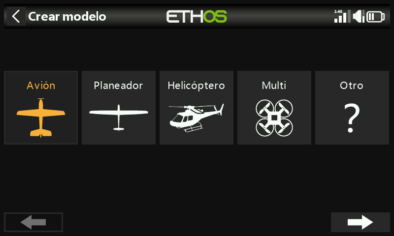
Desde Seleccionar modelo, inicie el asistente Avión y elija Receptor no estabilizado.
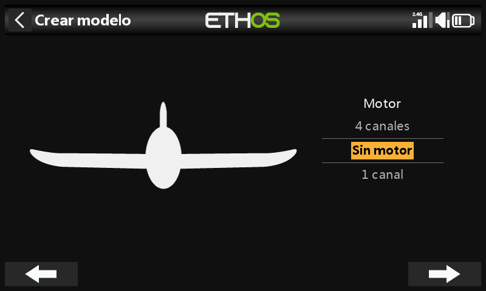
Seleccione Sin motor, acepte los 2 canales de alerones por defecto y seleccione Sin flaps.
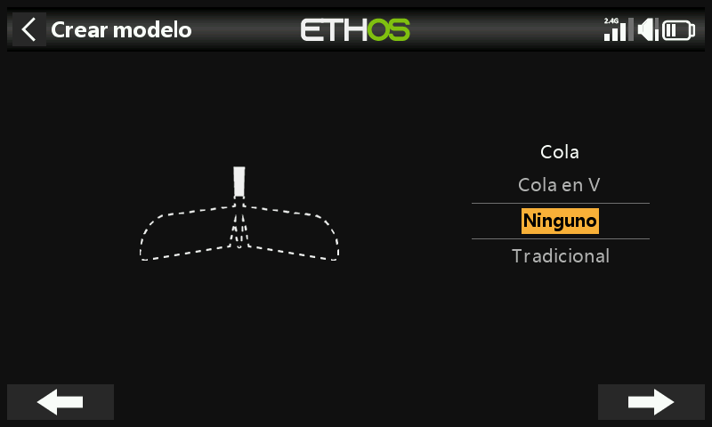
Seleccione Ninguna como tipo de cola: esto es lo que hace que Ethos cree automáticamente la mezcla de elevones (entradas de alerones + profundidad, ambas sobre los mismos dos canales). Defina un nombre para su modelo (p. ej. "Weasel"), elija una imagen y finalice: pasará a ser el modelo activo en la categoría Avión.
Paso 4. Revisar y configurar las mezclas¶
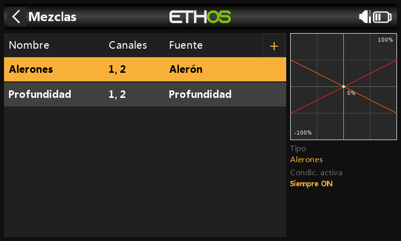
El asistente crea una mezcla de Alerones en los canales 1+2, seguida de una mezcla de Profundidad también en los canales 1+2: ambas entradas actúan sobre los dos canales de elevones, que es precisamente en lo que consiste la mezcla de elevones.
Alerones¶
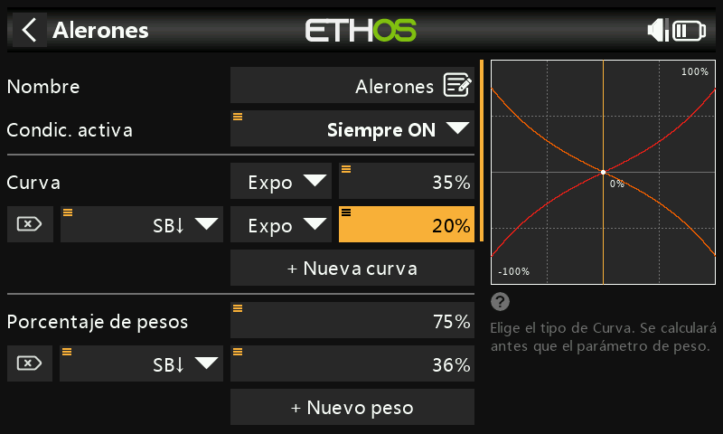
Peso/Rates: según el manual del Weasel, la deflexión de los alerones debe ser aproximadamente 3 veces la de profundidad, y ambas deben sumar 100%: 75% de alerones y 25% de profundidad. Los rates bajos son aproximadamente la mitad de los altos: 36% de alerones en rate bajo y 12% de profundidad en rate bajo.
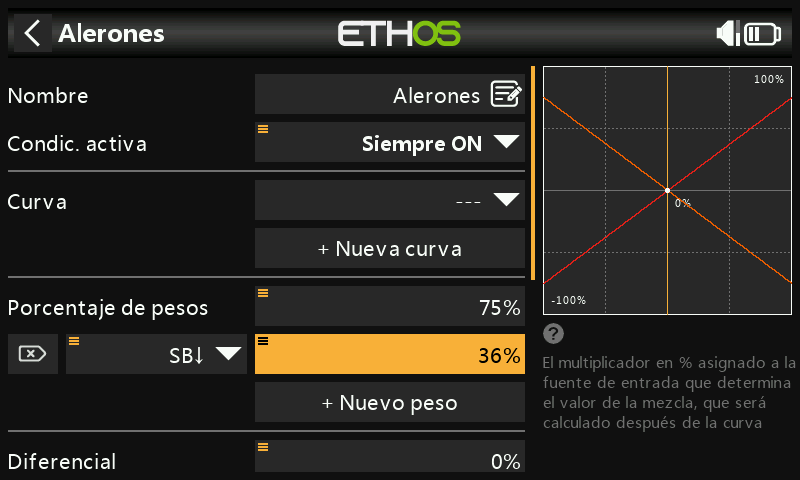
Expo: el valor recomendado para el Weasel es 35% en rate alto y 20% en rate bajo, activado con el interruptor SB abajo, suavizando la respuesta en torno al centro de la palanca.
Diferencial: pequeño en esta célula, alrededor del 4%:
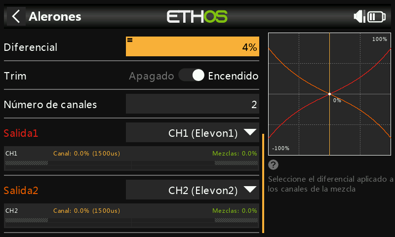
(Consulte el Ejemplo básico de ala fija para saber por qué es importante el diferencial: aquí se aplica el mismo razonamiento sobre la guiñada adversa.)
Profundidad¶
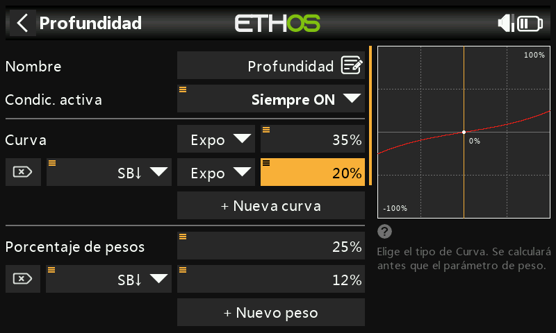
El mismo patrón: rates alto/bajo de 25%/12% y los mismos valores de Expo que en los alerones.
Timón¶
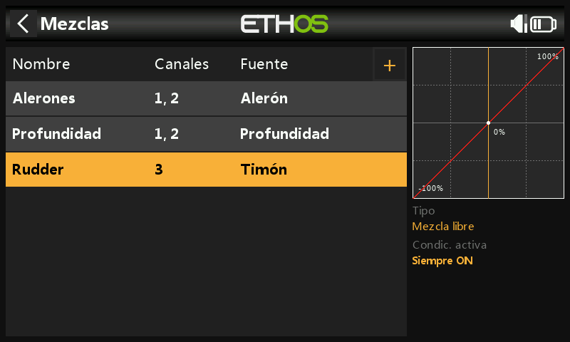
El Weasel no lleva timón: las alas volantes generalmente no lo necesitan. Cuando sí se necesita timón en un modelo con elevones, añádalo como una Mezcla Libre en el canal 3.
Paso 5. Vincule el receptor¶
Igual que en el Paso 1: registre y vincule antes de continuar, y considere desconectar los varillajes de los servos o reducir el recorrido hasta que se hayan ajustado los límites Mínimo y Máximo, para evitar forzar algún elemento.
Paso 6. Revise las mezclas¶
Los canales de salida 1/2 pueden renombrarse como Elevon1/Elevon2. Con el alerón a la derecha a fondo, el canal 1 (derecho, hacia arriba) indica 75%, mientras que el canal 2 (izquierdo, hacia abajo) indica 72%: la diferencia del 3% es el diferencial en acción. Si además se aplica profundidad abajo a fondo, el canal 1 pasa a 75+25 = 100% y el canal 2 pasa a 72−25 = 47%.
Paso 7. Configure los recorridos máximos de los servos¶
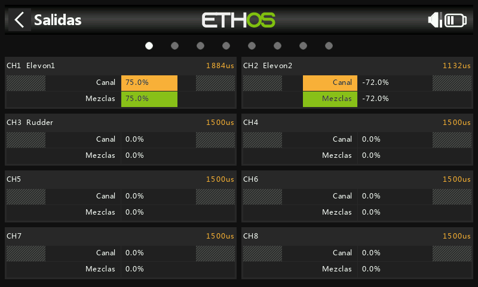
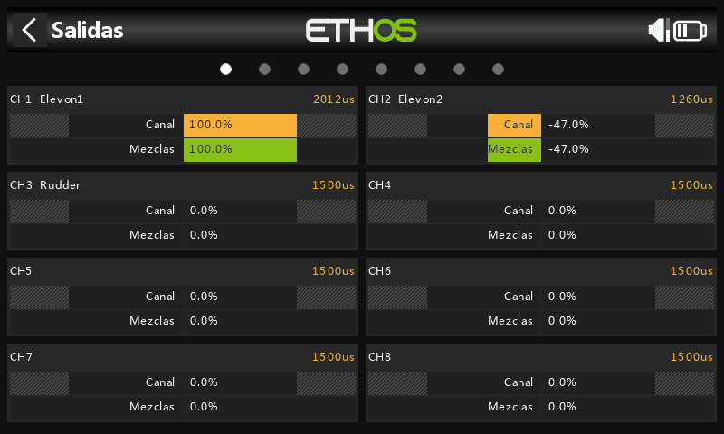
Centre primero cada servo con PWM center. El recorrido máximo recomendado para el Weasel es de 25mm de alerones + 10mm de profundidad = 35mm combinados: aplique las entradas de alerones/profundidad tanto sumándose como oponiéndose a fondo y compruebe que ninguna supere los límites mecánicos ni los del servo antes de fijar las deflexiones definitivas.
- Mínimo/Máximo: límites absolutos, que nunca se sobrepasan; reducirlos reduce el recorrido en lugar de recortarlo. Por defecto ±100%, ampliable a ±150% si es necesario.
- Curva: a menudo más rápida y flexible que ajustar directamente Mínimo/Máximo/Subtrim, con la ventaja de un gráfico en vivo. Una curva de 3 puntos es adecuada para la mayoría de las salidas; una curva de 5 puntos en el segundo elevón facilita sincronizar el recorrido en 5 puntos con el del primero. Al utilizar una curva para esto, deje Mínimo/Máximo/Subtrim en sus valores de paso directo (−100/100/0, o −150/150/0 con límites ampliados) y deje que sea la curva la que se encargue del ajuste.